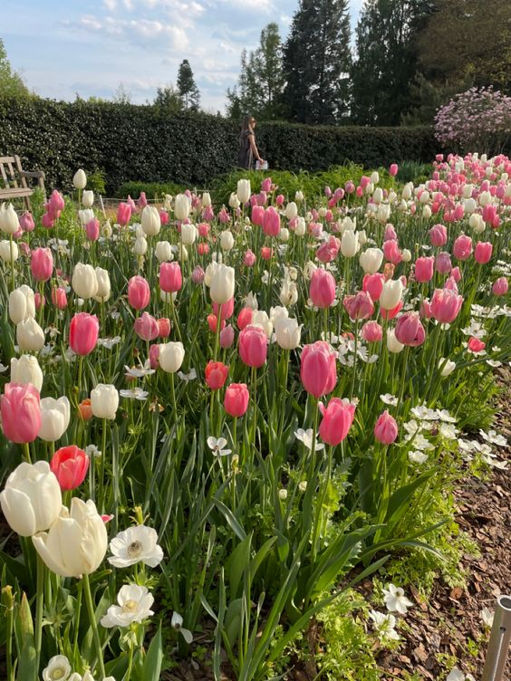
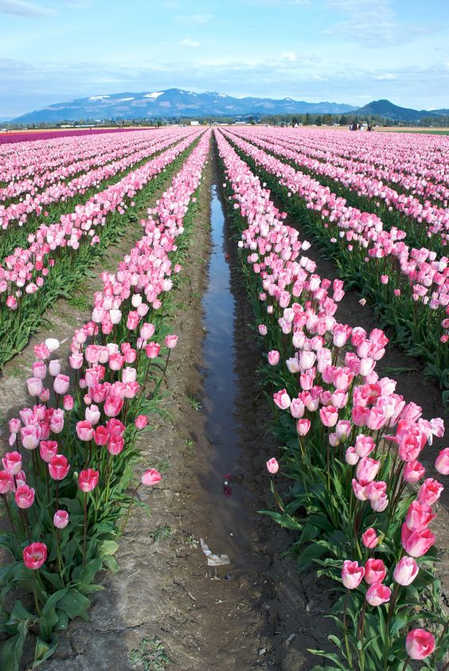
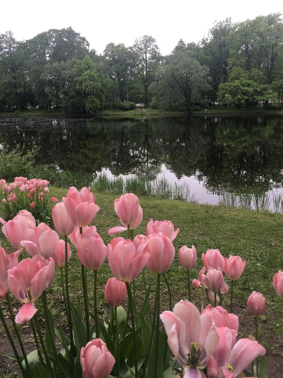

Our tulips, usually in pink, are native to faerieland and grow in beautiful sancturies scattered across the lands.



Located in various areas around faerieland, the main town tulip gardens can be found at the angel's grove and in the central tulip fields
Faerieland's tulip gardens have been growing for hundreds of years, one of Tenarvias most oldest features


 Back
Back